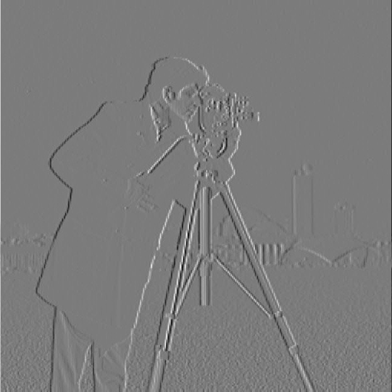
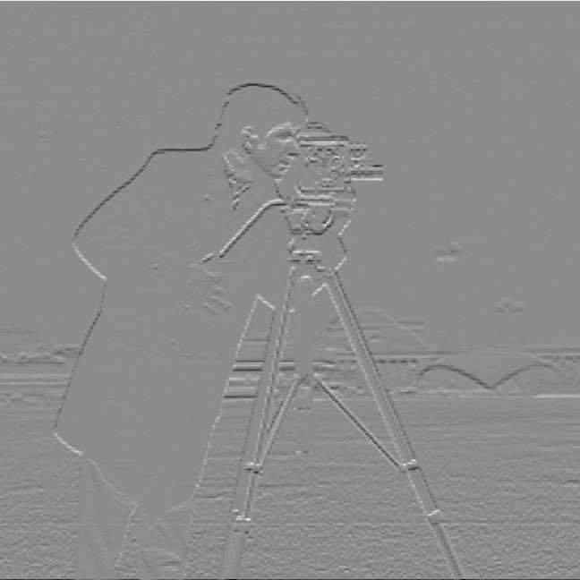
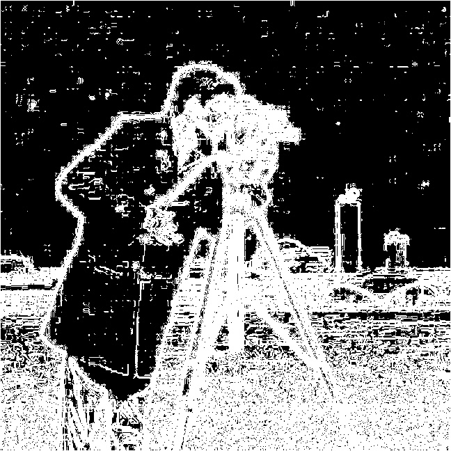
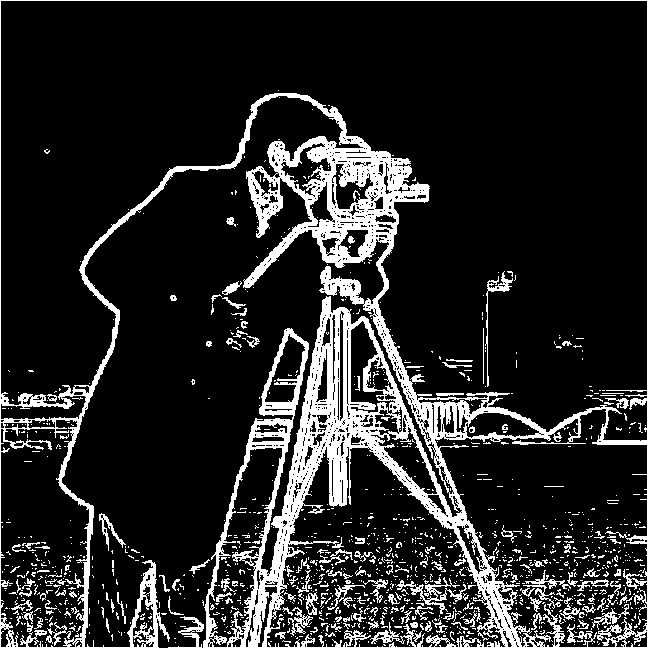
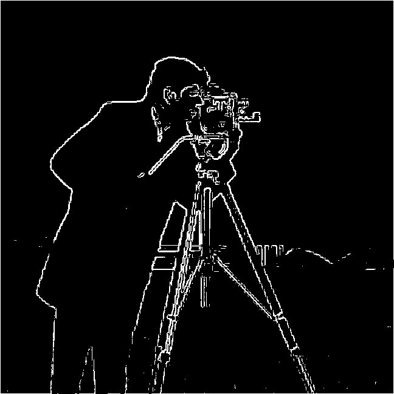
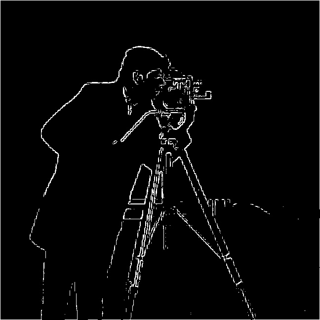
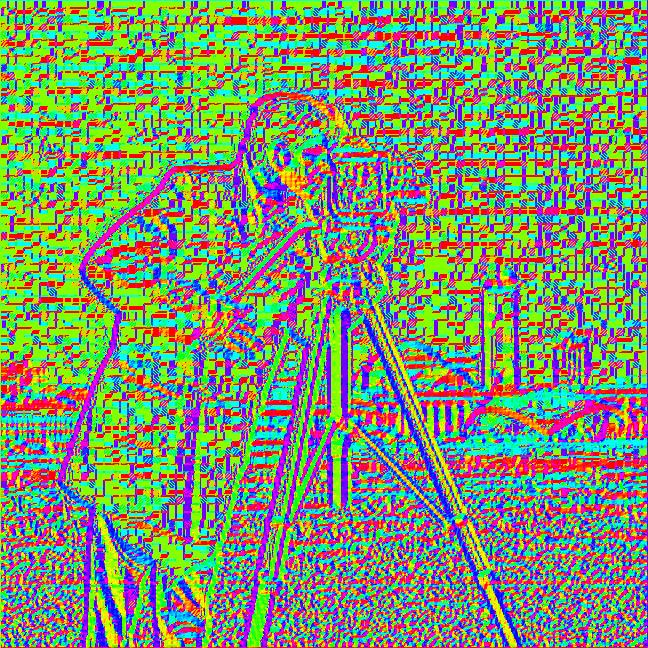

Return to Assignment 2 Overview
This was the original camera man image:
I read the cameraman image in grayscale with cv2.imread(image, cv2.IMREAD_GRAYSCALE) and convolved it with the finite difference operators dx = np.array([[1,0,-1]]) and dy = dx.reshape(-1,1) using signal.convolve(grayscale_image, dx, mode='same'). For the gradient magnitude, I combined the two partial derivatives with grad = np.sqrt(dx_output_image**2 + dy_output_image**2), which shows how strong the edge is at each pixel.



To binarize the gradient magnitude, I went through every pixel and set it to 255 if grad[i][j] >= threshold and 0 otherwise. I experimented by trying different thresholds of 5, 20, 35, 50, 65 and 80 to see which was best.



I found that the lower thresholds of 5, 20, and 35 had a lot of noise (specks in the images), so I moved to higher thresholds:



The higher the threshold I set, I found that the images were starting to lose their edges, for example, the edges of the coat were becoming less and less visible. I think that the best representation for the binarized gradient magnitude is the threshold of 50 since it's the lowest value where the noise is almost gone while the main edges (cameraman, tripod) are still strong/visible. The tradeoff here is that with the threshold set to 50, you lose the buildings in the background since their edges are weak.
For bells and whistles, I needed to compute the image gradient orientations and map them with HSV. The gradient at each pixel points in the direction the brightness increases fastest. I had to show this direction as a colour without using an angle function so I gave every direction its own number, so that the number goes up steadily as the direction turns around in a circle. Since I avoided angle functions, my orientation values aren’t a real angle and each quarter of the circle is squeezed onto the same range, so the colours aren’t spread perfectly evenly, and diagonal directions get slightly more or less hue space than straight ones.
vertical = y/total, where total = abs(x) + abs(y). This is −1 when the gradient points straight up, 1 when it points straight down, and 0 when it is completely horizontal. Pixels with total == 0 have no direction, so I skipped them.x >= 0), I kept vertical, giving values from −1 to 1. If it points left, I used 2 - vertical, which continues the scale from 1 to 3. Going all the way around, up is −1, right is 0, down is 1, left is 2, and back to up is 3.hue = (orientation + 1) / 4 and saved them with the cyclic hsv colormap using plt.imsave("hsv_cameraman.jpg", hue, cmap="hsv"). Because the colormap wraps around, −1 and 3, which both mean “up,” get the same colour.
Up: red
Down: cyan
Right: yellow to green
Left: blue to purple